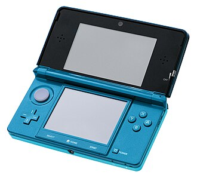

The Nintendo 3DS Family: A Revolution in Handheld Gaming
10/29/2024Introduction
The Nintendo 3DS family is renowned for revolutionizing handheld gaming with its dual-screen concept and touch-based controls. Over the years, several 3DS models were released, each offering unique improvements and features. This article explores all the variants in the Nintendo 3DS family, from the original 3DS to the last of its line.
Nintendo 3DS

The Nintendo 3DS was the next significant leap for the DS family,
launched in 2011. It retained the core dual-screen concept of its
predecessors but introduced glasses-free 3D technology, allowing
players to experience depth and visual effects without the need
for additional hardware. The 3D effect was adjustable and could
be turned off entirely for those who preferred standard 2D gameplay.
The 3DS also featured a more powerful processor, which enabled more
complex and graphically detailed games. It supported backward compatibility
with DS titles and introduced its own suite of games, such as Super Mario 3D
Land, The Legend of Zelda: Ocarina of Time 3D, and Animal Crossing: New Leaf.
Like the DSi, the 3DS included a digital storefront—the Nintendo eShop—which
allowed for the download of full retail games, indie titles, and classic games
from older Nintendo systems.
Nintendo 2DS
The Nintendo 2DS was released in 2013 and removed the 3D functionality but maintained compatibility with all 3DS and DS titles. Its flat, slate-like design catered to younger players, offering a durable and affordable alternative to the more fragile clamshell designs. Its straightforward design and lack of 3D made it the most affordable model in the family, broadening its appeal. Although part of the 3DS family, the 2DS shared much of the DS lineage, offering an entry-level handheld gaming experience at a lower cost.
New Nintendo 3DS/3DS XL
The New Nintendo 3DS and New 3DS XL were released in 2014 in Japan and 2015 worldwide, building upon the original 3DS with enhanced hardware. Both models feature a 804 MHz quad-core ARM11 CPU, a slight bump from the original 3DS's 268 MHz processor, along with 256 MB of RAM and 10 MB of VRAM, improving performance for more demanding games. The New 3DS has a 3.88-inch upper screen and a 3.33-inch lower touchscreen, while the New 3DS XL offers larger screens at 4.88 inches and 4.18 inches, respectively. Both devices improve the 3D functionality with face-tracking technology, allowing a more stable 3D effect even with slight movements. Other upgrades include the addition of the C-Stick for better control, extra ZL/ZR shoulder buttons, and built-in NFC for amiibo support. The New 3DS also features customizable cover plates, giving users more personalization options, while the XL model focuses on delivering a bigger, more immersive gaming experience.
New 2DS XL

The New Nintendo 2DS XL was released in July 2017, providing a more affordable alternative
to the 3DS lineup while retaining many of the features found in the New 3DS XL. It sports a
clamshell design with a 4.88-inch upper screen and a 4.18-inch lower touchscreen, the same
dimensions as the New 3DS XL but without the 3D functionality. Under the hood, it features
the same 804 MHz quad-core ARM11 CPU, 256 MB of RAM, and 10 MB of VRAM, ensuring smooth
gameplay and compatibility with most 3DS and DS games.
The New 2DS XL also includes the C-Stick for precise control, ZL/ZR shoulder buttons,
and built-in NFC for amiibo support, similar to its 3D-enabled counterparts. Its lightweight
design and slightly slimmer profile make it comfortable for long gaming sessions.
Positioned as a budget-friendly option, the New 2DS XL offers a great balance between
performance and portability for players who don't mind missing out on the 3D effect.